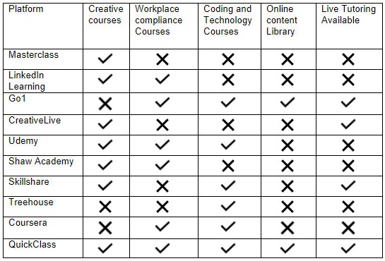
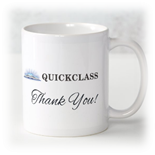

Project Description
Overview
Topic
Motivation
Landscape
Detailed Description
Aim
Goals
Plans and Progresss
Roles
Scope and Limits
Tools and Technologies
Testing
Timeframe
Risks
Groups Processes and Communications
The main goal of our project is to provide a learning platform called QuickClass, which provide short courses across a vast range of areas. This learning platform will prompt users to register and create a user profile based on their hobbies, interests and career goals. Students will also be able to input previous courses that they have completed. Based on this information, QuickClass will make recommendations on future courses that the student can complete in line with their goals and be assigned a tutor to each course. This tutor will teach and provide support through the learning process and provide feedback after the final grade on how the user went and possible next steps.
This platform will have similar functionality to online student portals at Universities, but with short courses that could range as low as 1 to 3 sessions per course. These courses will cover interests and hobbies, career goals, workplace compliance and more. Each subject will have an online content library for the student to access and they may have homework and a quiz at the end to determine if the user has retained this knowledge.
The primary motivation behind this platform comes from the desire to learn, which is the consensus of Team Exodus. There are many ways to learn about every subject matter, but this information is often omnidirectional and may not cater to different learning styles. Many learning platforms provide educational videos and quiz students on their knowledge, but relatively few offer support from teachers or tutors in a one to one ratio or small group setting. From our own experience, we have found the importance as students that asking questions aids in the learning process. The ability to communicate in areas we may face difficulty in boosts confidence to get over the hurdle and gain a more profound knowledge of the concept/topic. This process will also allow us to modify our training and ensure it is delivered in the best manner possible. This platform offers that opportunity without the full long-term commitment of a university or TAFE qualification.
Current trends show that online classes are gaining popularity rapidly, indicating that our platform is unique and valuable in the market. If we launched this project in the coming months, it would demonstrate to our current and future employers our ability to work in a team, commitments to a deadline and our creativity in the process.
As previously mentioned, there are several online learning platforms that offer short courses. These platforms are referred to in the below table.

There are a couple of takeaways from this information. Most of these platforms focus on either the creative industries, technology or workplace compliance areas. Udemy was the only platform out of this list that offered courses across such a broad range of areas. There was also only one other platform that offered users access to a content library to study while completing the courses, which was Go1.
The last category that each platform was assessed was whether there was live tutoring available during the courses. Only three other platforms offered such assistance, but to varying degrees. CreativeLive was perhaps the most comprehensive of this group; when the class is taught live, a user may interact and ask questions to the panel while the teacher is delivering the content. This is an excellent way for the students to interact with the teacher, but this process only happens during the initial live stream. After this point, the user may watch the playback. Go1 offers email and chat support, telephone support, content curation pre and post completion. Finally, Skillshare offers a discussion board so that you may contact the teacher, but this is not the one-on-one tutoring that may be necessary for some students.
Aim
Users should be able to use QuickClass as a learning platform based on their needs/interests
The main aim of QuickClass is to provide an online and live learning platform that caters specifically to those that only require short classes to cover specific topics. We have found a gap in the market for short online live courses. QuickClass will cater to users who wish to learn new interests and hobbies, such as photography/photoshop, to further understand topics they are already familiar with, either professionally or in their everyday lives. QuickClass will also provide courses for compliance required by human resources and health and safety departments in a wide array of industries. The expectation will be that QuickClass will be accessible on any computer (both Windows and Mac), mobile device and VR with a stable internet connection.
Create a plan to cover the complete project and ongoing support
As this project is ongoing over several months or possibly a year, having a clear and well thought out plan is extremely important and valuable to see it into fruition. This plan should clearly outline all the features we hope to add to our website and how we intend to assemble all other items (Teachers and internal equipment). It would provide us with a guideline for hiring suitable candidates for roles in the company that would be required to complete this project.
One of the main reasons for having a complete plan is to gain external funding via different revenue streams. Being able to present a complete plan of what we hope to achieve and how we plan to do it will inspire confidence in possible investors.
The second reason could aid especially useful when the project gets delayed or put on hiatus for any reason. Anyone should be able to read and understand the plan to resume where we left off; for example, new staff members hired will spend less time understanding the overall objective and continue work quickly.
Funding
Funding is an integral part of starting and maintaining a business. As the project of QuickClass is still in its infancy, funding is one of the major priorities to focus on. Initial funds are necessary to build the initial project up, have the first phase of the website up running and continue and improve the project after completion of the start-up plan. QuickClass’s funding aims to have a 50% crowdfunded approach to the amount needed to launch our site and bring our project to a reality. The other 50% will come from investors. Continued funding after this could potentially come from the government as we are an educational service. If this funding does not work out, however, there are subscription fees that could be used to gain the necessary funds to continue the project.
Crowdfunding
The crowdfunding side of things is a large portion of our funding as we are a start-up business with only a few members. Crowdfunding is a valuable resource for many small businesses as it allows the potential interest of the public to fund the project. It also motivates businesses to reach goals as they have an indication of how interested the public is in a product or service they hope to deliver whilst allowing business operated plans and progression. The team working on the project will have a more focused timeline.
Crowdfunding is also a great way to generate interest, as sites like Kickstarter and GoFundMe are popular among people excited to learn, create and explore new ideas. This philosophy aligns with what QuickClass is, as we hope to bring new experiences and opportunities to those using our services.
Another reason crowdfunding is a significant source of our income during our planning stage is that it allows intermittent goals that can be updated as funding is either over or under the expected donations. There are many benefits to crowdfunding a project and their systems in place to keep a business from backing out; because of this, it is thought to be reliable and safe to use as a funding option.
Investor Backing
Investors are used as another major source of funding for QuickClass. An investor is a potentially wealthy benefactor who puts some of their own capital into a project in order to potentially gain a percentage of profits in return. The reason we have chosen to use investor backing is due to the quick funds they gain allowing a set amount of money to be given to a project and letting the development team understand what they must work with. Whilst this does eat into potential profits after development of the project is complete, it is still a great idea as this has the potential to create much larger profits, that even with the percentage taken from the final revenue can be awarded to the company on a bigger scale. This is because the development team has the funding required to create a high-quality product or service allowing a better public to vote on quality with their wallet so to speak. These benefits led to the team choosing to use investor backings to create the necessary funds needed in order to get the project started.
Hire experts in various IT fields
Our team alone are not experienced enough to fully implement all the features we desire this website to contain. For this, we will be focusing on hiring senior and highly experienced individuals in programming, artificial intelligence/machine learning, IT operations management, and media content creation. These roles will be vital to implementing features into the website and bringing more clients and users onto the platform. This goal sits as third in the priority order because we will require total funding to pay the wages and a plan of what we need to be done before we know what roles to fill.
Buy and build all the back-end equipment
Once we have our funding and employees who have a high level of experience in IT systems, both hardware and software, we will be able to order and install all our on-premise equipment. These include servers for hosting our website and substantial amounts of data storage of all recorded classes. Our goal is to install all software in an on-premise setting so that everything is hosted onsite.
While not all components of our IT equipment can be kept locally, some will be configured by our operations team to connect to software as a Service (SaaS) cloud and services. We will implement a backup that includes two levels of full backups, one onsite and one kept in the cloud for security purposes. This goal sits at a lower priority (fifth), as it requires both high investment cost and the experience to configure it together to run efficiently.
Build a network for trained teachers in various fields to provide content
This goal will be indefinite and ongoing as we will be looking for people who are experts in their respective fields. These individuals will be acquired via various methods through our website, recruitment rounds and job postings. As these people need only provide one or two classes a week, plus marking tests, we will be able to reach out to people looking to supplement their current work and are out of state/country as these are all online classes and they teach anywhere, anytime.
We may look at hiring teachers directly as full-time permanent employees or sign-up candidates who prefer short-term contracts. We will advertise our openings for teachers on all major job posting websites and have a careers page. This goal can be placed at any point after we receive funding as the hiring process can take a long time, particularly many roles as we’ve not locked into a specialised field.
Build a website
Users should be able to interact with the teacher in a live session and thru feedback
The most critical component to this project and website is for the users to interact with the teachers in real-time across various features. Our whole market that this project is trying to corner sits between conventional short online learning courses such as LinkedIn learning or Go1 and full scale online higher education such as services provided by Open Universities Australia through various educational institutions.
Our website is designed to allow students in classes to interact with the teacher in real-time, letting students ask question(s) for more clarification, therefore providing a deeper understanding of the material that benefits the students. During the live classes, the interaction from the students can be via voice or text chat.
Another kind of interaction that we hope to implement is through online tests, quizzes, or exams given and marked by the teachers. This will provide a full accredited result and show feedback to the students with their marks on areas they could improve.
The final component that allows for interaction been student and teacher will be one on one tutoring sessions, which a student can apply for if they require extra assistance. This goal is considered the most critical as this is what separates this website from other online learning platforms.
Users should be able to search by tags, search terms or popular courses
As required with fully functioning website we do not intend to have all courses on a single page for the users to sort through themselves. A home page will display a few recommended that most closes reflect their use on the website and a list of most popular courses overall. If users want to look up any other courses, they will do this via a search bar located at the top of every page. This search feature will be able to search by names of courses and associated tags assigned to courses. Tags will include the name of the course, commonly associated words with the topic and the course's length.
After doing any search, the content displayed would be able to be sorted by various categories such as length of course, most popular, featured and most relevant. This feature is a requirement to ensure that the website does not become a single page with hundreds of options; this goal has been ranked second in website priority to ensure that QuickClass is user friendly.
Users should experience recommendations based on an initial quiz, searches and past courses
One of the main goals of this project is to implement a complete machine learning algorithm that can assist users in finding new courses in their desired field/interests. This will be implemented in various parts of our website; the first and most critical component to the algorithm is a quiz when first signing up for the website. This quiz will ask a large variety of multiple choice and dropdown questions to help determine what courses are closely related to their interests.
Another component of machine learning is to monitor all searches on the site and record all the attended and watched course videos. This will allow the website to show different recommendations if the user starts watching videos not based on the original quiz results. We hope to develop an algorithm that will learn various patterns and learning styles of the user so that users may find more courses to subscribe to and generate more income.
Of our currently recognised goals, the implantation of machine learning to recommend courses sits at third. At the same time, this is a key vision for the website; this only adds to the user experience but does not take away the website's basic functionality (to provide a platform for learning).
Ability to record and sessions video, audio and written components
Part of our project scope is to have the functionality to provide a cheaper option to some users who do not feel the need to participate in live classes or do not need an accredited certificate at the end of the study period. This will be done by recording live classes and loading them to a video library that can be accessed by anyone with an account with QuickClass.
Students will also be able to access any documents that were provided with the original live class, such as quizzes or fact sheets, but will not be able to submit them in or request clarification where required. Students who access this level of learning will also be able to read typed messages in the text chat for the class, but will not be able to type new messages. This feature has been ranked fourth because while this would be a powerful addition for users who are looking to just learn new skills the same way they might on YouTube, our focus is for those that require the live classes.
Learning via different medium types
While at the start having just a functioning website is great, our focus will be on being able to provide our learning platform across many different media types, including full support on Microsoft Windows, Apple macOS, Google Android and Apple iOS. This will allow us to reach out to as many people as possible, as some people might only have access to a tablet or phone at certain times of the day.
We would also like to be at the forefront of learning platforms that incorporate technologies like Virtual Reality (VR) as a media type. With the sales of VR worldwide on the rise and predicted to continue to do so (Aslop, 2021), it would be a strategic move for us to follow this trend in innovative technology and allow our platform to stand out to engage with users in new and exciting ways.
As important as connecting students to teachers in a large variety of ways, this goal has been ranked last to implement because our focus is on getting all our key features functioning correctly before adding a different way to interact with our platform.
Users should be able to list as a credential on their resume or job profile
As an online learning platform, we envision that users would like to provide evidence of their education through our platform in various formats. We would seek recognition and accreditation from TEQSA (Tertiary Education Quality and Standards Agency) on select courses so that users can add all completed courses to their CV recognised in their current and future employment. With internationally recognised credentials, QuickClass can entice students from overseas to enrol in our platform, widening our total intake of students. This goal has been placed in the second last of our overall goals due to our focus to provide a high-quality user experience with the users and to be able to deliver on the promised features. This is also because to become accreted in particular subjects and reach out to various industry bodies which go thru compliance exercise that takes more time and assessment.
Donation sections
Innovation may not be just technological, but organisational and managerial, economic, marketing, social, ecological, etc. We decided to introduce innovation, which in our opinion is very important in modern society. This innovation consists in the fact that if our client donates on our website, then depending on the amount of donation, he will receive a free course or several free courses. For example, a donation of $ 15 will allow the user to receive one free course and technical support. A donation of $ 40 or more will be rewarded with three courses to choose from a wide range of courses. In addition, in gratitude, we will send you a coffee mug with the logo of our site. We hope that our innovation and donations to charitable foundations will make our world kinder and more beautiful!
“Your donation is making a positive difference to people who are experiencing homelessness, addiction, disadvantage or a family crisis. Your support will help provide them with a pathway to independence, hope and a brighter future.” (The Salvation Army)
